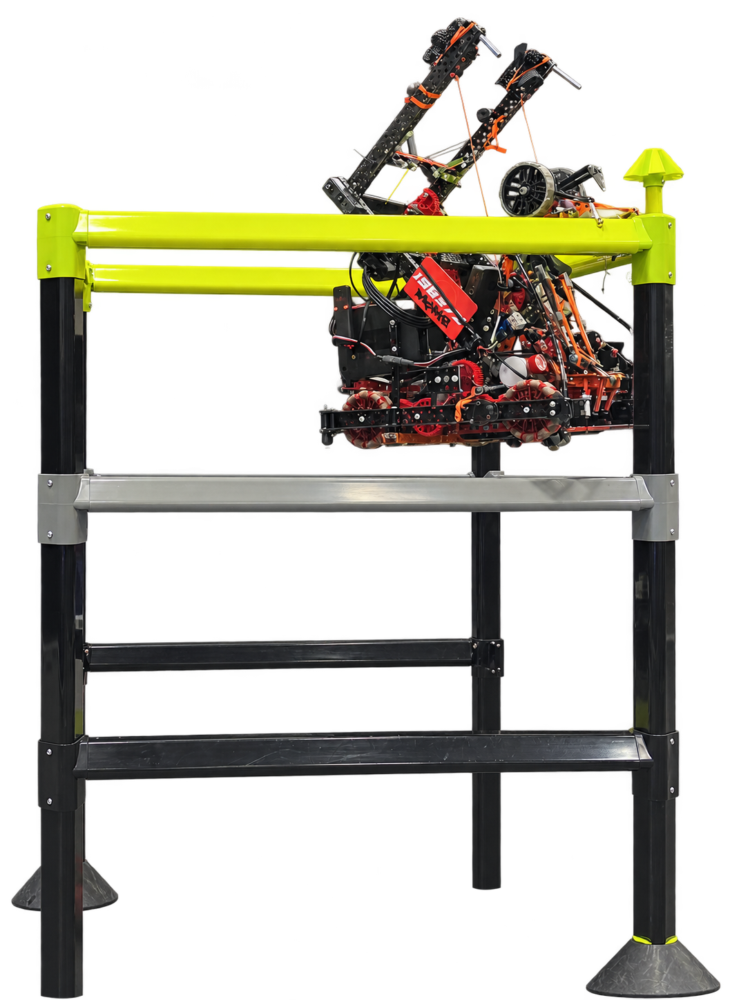
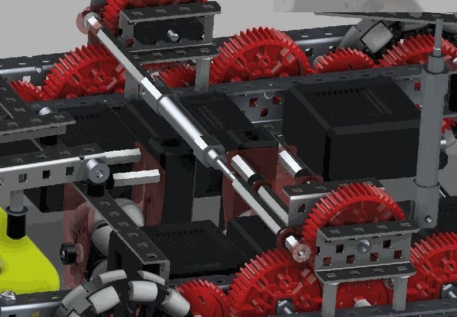
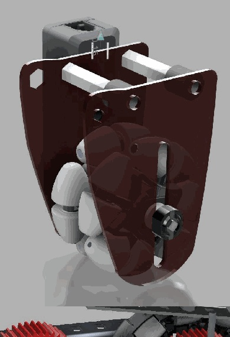

Mechanical design · Competition robotics
VEX climbing and odometry
In the VEX High Stakes endgame, a robot had to climb a four-foot ladder and place a ring on the top stake. Ours reached the third rung in under 12 seconds at the World Championship while scoring the ring. By our competition count, fewer than 5% of teams completed both tasks.

The mechanism
I designed and integrated the climbing mechanism, drivetrain motor-sharing system, and odometry hardware. My teammates wrote the VEX software. The hang used active hooks to reach the next rung, passive hooks to hold the robot as the active hooks reset, and a routed climb line tensioned by a drivetrain-powered winch.
A pneumatic power take-off shifted motor power from the wheels to the winch. Passive isolation feet lifted the drive wheels off the floor for the initial climb so wheel-ground friction did not fight the winch. The winch ran at roughly 450 RPM with about 66 W available.
- Climb
- Third rung in under 12 seconds
- Power sharing
- Drivetrain motors → pneumatic PTO → winch
- Odometry
- Separate tracking wheel + rotation sensor
- My scope
- Hang, PTO, odometry hardware, mechanical integration
Build views



Beyond one robot
I co-founded and helped lead a robotics community that grew to more than 200 students in Katy, Texas. We founded and mentored eight high-school teams. The program won the 2025 UIL Texas State Championship and qualified for VEX Worlds seven times. I now serve as a senior advisor.